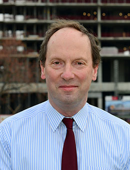
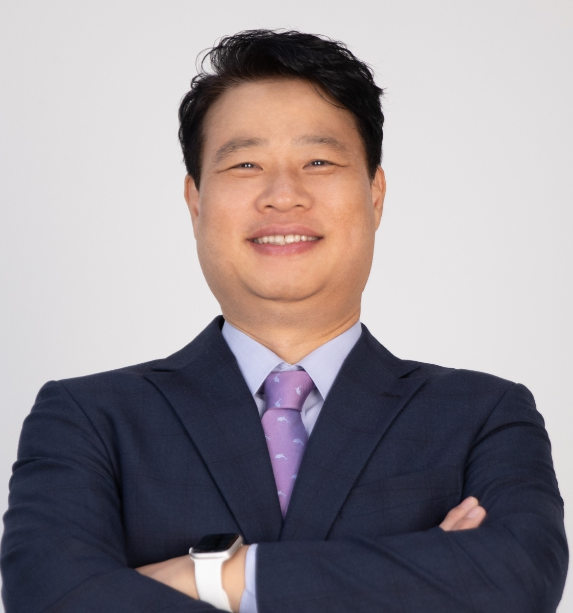
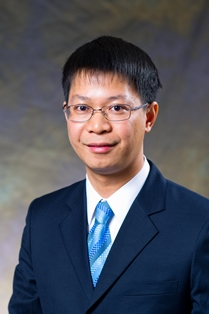
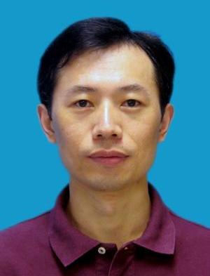
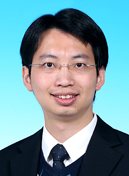
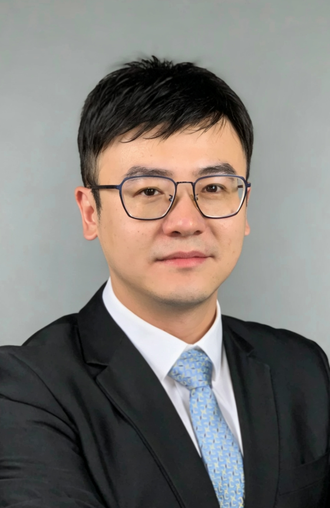
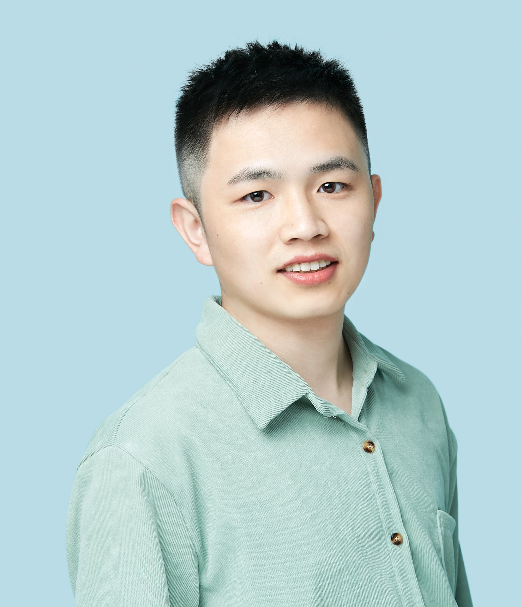
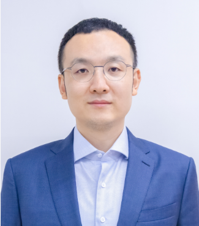
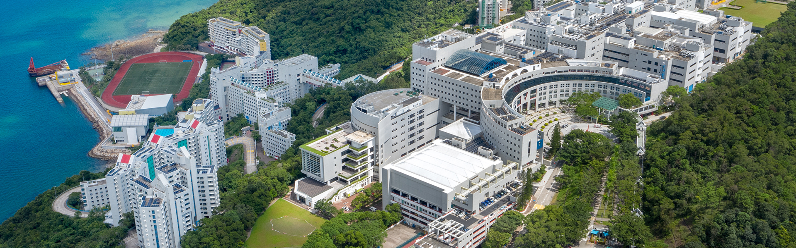

Mirosław J. Skibniewski
Professor
Department of Civil and Environmental Engineering · Maryland Robotics Center · University of Maryland
About
This one-day seminar brings together researchers and practitioners from top universities and construction organizations to examine how robotics can move from labs toward real construction sites.
Speakers

Professor
Department of Civil and Environmental Engineering · Maryland Robotics Center · University of Maryland

Professor
School of Civil and Environmental Engineering · Georgia Institute of Technology

Professor
Department of Architecture and Civil Engineering · City University of Hong Kong

Head and Associate Professor
Department of Construction Management · Tsinghua University

Associate Head and Professor
Department of Civil and Environmental Engineering · The Hong Kong University of Science and Technology

Associate Professor
Department of Industrial and Systems Engineering · The Hong Kong Polytechnic University

Assistant Professor
Division of Integrative Systems and Design · The Hong Kong University of Science and Technology
Assistant Professor
Internet of Things Thrust and Artificial Intelligence Thrust · The Hong Kong University of Science and Technology (Guangzhou)

Associate Director
Hong Kong Center for Construction Robotics
Agenda
Each invited talk is scheduled for 20 minutes plus 5 minutes of Q&A. Times remain tentative and may be adjusted once travel and talk details are confirmed.
Poster Session
The seminar includes poster moments during lunch and coffee breaks for early-stage ideas, ongoing work and collaboration discussion.
We invite up to 10 posters related to construction robotics, automation, digital twins, embodied AI, human–robot collaboration and adjacent topics.
Submission deadline: To be announced.
Please indicate your intention to present a poster on the registration page. Poster submission instructions will be announced with the final agenda.
Register poster interestVenue
The seminar will take place at The Hong Kong University of Science and Technology in Clear Water Bay. Detailed room and arrival information will be published with the final agenda.

Details will be updated.